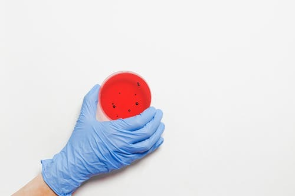
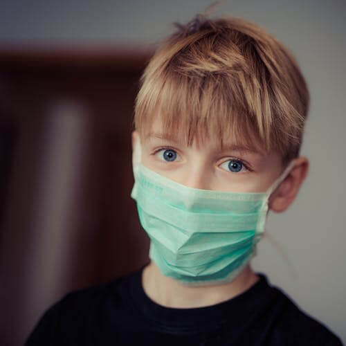
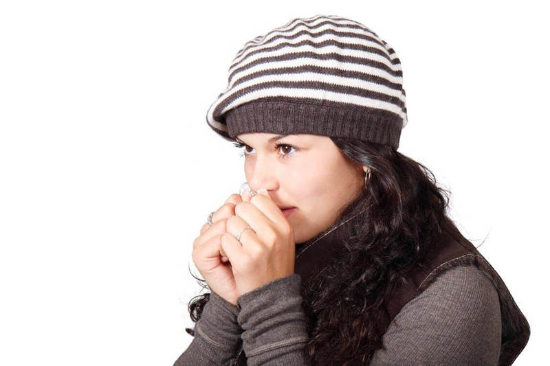

Coronavirus has taken the world by storm, and everybody is talking about the virus. In this world of the Internet, where everyone has a voice, fake news travel faster than actual news.
That is why even after so much is written and covered about coronavirus. People aren't aware of how to protect themselves.
So, here are six key points to keep in mind to protect yourself.
I have created Full Fleaged video Play-List & Movies List For You
🎞️Movies & Web-Series 🎞️ ▶Youtube-Best
1. Origin of the Virus :

Many conspiracy theories are floating on the internet that the virus is a bio-weapon created by china to control its population, or it is an experiment gone wrong.
There is also a video of people eating bats, and it is inferred that bats are giving the virus to humans. An earlier version of coronaviruses was originated from bats, but this is a new virus, and there is no concrete evidence of this virus transmitted from the bats.
However, there isn't enough evidence to point to somewhere else. Hence, the virus can come from anywhere, so don't eat anything which isn't clean.
2. Transmission of Coronavirus :
A virus is considered deadly if it can transmit itself to other hosts very quickly. As we can see, although coronavirus doesn't have a high fatality rate but it is spreading at a really fast pace.
Hence, a large number of people are at risk due to coronavirus. The virus is currently transmitting from person to person. This is why people are avoiding handshakes or social gatherings because even a single infected person can transmit the virus to everyone else.
This is the reason why people coming from infected places are checked for the virus and infected host placed in quarantine to avoid the transmission of coronavirus.
3. Wear Masks :

As stated above, the virus is spreading from person to person. One of the ways is through coughing. When a person cough, he breathes out things from his body, including the virus, and if someone else breathes the air and he also inhales the virus.
Hence, it is wise not to visit places with a chance of you getting infected and secondly wear masks everywhere you go. This will significantly reduce the chance of the virus inhaled by you.
4. Wash your Hands : This Site is Under Development Please Provide Valuable Sugesstion To Improvement
When we are young, we are told to wash everything and our hands each time we eat. Most of us follow this rule in our childhood, but as we grow, this habit gets lost somewhere.
We don’t always wash our hands before eating. The reasons behind washing your hand are to kill any germs or virus which might be in your hands and to stop it from entering your body.
There is similar reasoning for washing your hands and refusing handshakes. You can greet people from a distance and always keep a hand sanitizer with you to regularly wash your hands off.
5. Stay Away From Silly Behavior :
Imagine you had a long and tough day at work, you are standing in the subway tired. It is very easy to wrap yourself around the pole to provide yourself with support.
Normally, there wouldn’t be any problem in doing so. But when there is an epidemic outbreak, you can’t trust anything. Maybe the same pole would be touch by a person suffering from coronavirus.
If you wrap yourself around it, you can also get infected. For this reason, it is advised not to do anything stupid, which can infect you.
This may include eating at restaurants, not washing eatables, keeping your house dirty, etc.
6. Only Trust Official Source :

As mentioned in the beginning, a lot of fake news is doing the rounds at the moment. That is why a lot of rumors are fed as facts such as coronavirus is a virus spread to reduce the human population or the fact that drinking bleach or silver can keep you safe from the virus.
But in reality, there is no vaccination available for the coronavirus, and the only way to stay safe is to follow the above precautions and follow official protocols.
So, if you have a fever or difficulty breathing, go to your nearest hospital and tell them everything you know and follow the instruction religiously.
As it is not only your life but the life of everyone around you that is at risk.
So, these are the key things you need to keep in mind while the world figures a way to fight the virus.
Although the fatality of the virus is low but as we have seen in the past, it can skyrocket within months. Precaution is definitely better than cure!